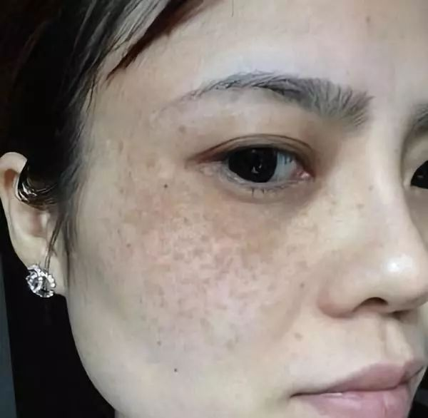

脸上有斑是体内有毒，这招方法让你美到尖叫！
头条新闻
热点
一个42岁的女人，竟然在3个月的时间里逐渐“返老还童”，脸上密布的斑点和纹路一点点消失不见，肌肤也变得白皙水嫩起来。
丨更多
这是刚刚发生在广东深圳市雪梅身上的真实事情。出差许久的老公看到她，惊得张大嘴巴；走在街上，总有帅哥跟在屁股后面要微信；去学校看望儿子，却被误认成姐姐......老公因此吃不好睡不好，说自己和她站在一起像父女，形象落差太大，一点安全感都没有。
这是两天前雪梅传来的照片， 脸上一颗斑点都没有，捕捉不到半点粗糙暗沉的影子，就连毛孔都看不出来，全脸零瑕疵，青春逼人！你能看出这是一位儿子已经上初中的妇女吗？
可就在3个月前，
雪梅还是下面这副模样
皮肤粗糙暗黄，毫无光泽，眼周和嘴角存在严重色素沉着，即使擦了粉底，脸颊成片的色斑依然特别明显，看上去比同龄人还要显老…完全就是一张中年油腻脸。
对于妻子突然间的容貌变化，雪梅的丈夫第一反应是去了美容店，甚至还质问妻子：“换这样一张脸是不连家底都败掉了，挺大岁数没个正经！”
面对丈夫的指责，雪梅忍不住大笑，说：“我怎么舍得去美容店，费用那么高，咱的钱我还留着给儿子娶媳妇买房子呢。再说谁整容脸不红不肿的？其实我皮肤变得这么好，全靠吉米”。
▲即使素颜，雪梅的皮肤也找不出一点儿瑕疵
看老公一脸疑惑，雪梅解释道：“我发小玉萍之前也是满脸斑，后来她朋友给她推荐一位叫吉米的护肤老师微信，老师根据她的情况教了她一个祛斑的法子，用了两三个月不仅斑没了，皮肤还越来越好了。她看我这几年皮肤越来越差，就让我也试试。”
▲玉萍祛斑纹后，就像换了一张脸
“刚开始我也不太信，但从网上一查发现确实有好多人的色斑和皮肤问题都是被吉米老师解决的。我想着多听听专家的建议也没啥没坏处，万一真有用呢。结果按老师教的方法试了两个星期，斑点就有淡化的痕迹，脸也没那么干了；又用了一个多月，现在整个脸一点斑都没有了，白了不少！皮肤好了，什么都好了！”
“吉米老师的方法真厉害！我VE、VC没少吃，面膜也没少敷，一周一次美容院，也没去掉的斑，现在几乎没花什么钱却全没了，皮肤还越来越好了。你看我这皮肤通透白亮了好几成，真是比年轻那会儿还好！”雪梅兴奋地说。
现在只要3分钟，学会吉米的祛斑方法，不管你是雀斑、黄褐斑、日晒斑，还是其他顽固性色斑都非常实用！想要立即祛斑的朋友，可以直接加微信，快速祛斑方案免费领~
或者添加吉米老师微信号:
吉米老师是谁？
她的祛斑方法真有这么神奇吗？
吉米——中国美容教父，当之无愧的中国时尚美业先锋，曾担任过章子怡、巩俐、刘嘉玲等明星的御用美容师。成名之后，他却淡出名利场，潜心研究纯天然祛斑方法，已经为千万女性成功祛除色斑，是众多女星的不二之选。
他的祛斑方法有3个特点：
一、色斑能祛除的一干二净！无论黄褐斑、妊娠斑、雀斑、晒斑、老年斑、电脑辐射斑，还是顽固的色斑都能消除。
二、绝不反弹，而且还能祛除痘印沉着、改善毛孔粗大、皮肤晦暗、萎黄衰老，让皮肤变得美白水嫩。
三、安全有保证，对皮肤零伤害、零刺激！
多家国内外知名媒体都对它进行了的重点报道。被评为“2018最具潜力祛斑品牌”。
女人肌肤白嫩至少减龄10 岁！
在对吉米老师帮助过的10000名受益者的回访中： 98.7%的人表示，坚持使用吉米的祛斑方法1个月，色斑明显淡化，皮肤变得白嫩细滑。 “逆生长”现象比比皆是。
去年长沙一位妈妈长期坚持使用吉米老师教她的祛斑美白护肤方法，半年时间，6次换脸，48岁看起来像28岁，后来竟被儿子的新女友误认为是小三，引发了一场让人啼笑皆非的误会。
雀斑、日晒斑、黄褐斑、辐射斑
立即铲除
32岁的秋丽是上海一家传媒公司销售总监，每天跟客户打交道，好形象等同于无形的职业资格证书。为此秋丽不惜重金买大牌化妆品，去美容院，在相当长一段时间，秋丽看起来确实比同龄人年轻。可随着年龄增长和工作压力的增加，脸上的色斑越长越多，一下子老了十几岁。用了很多昂贵的护肤品和护肤方法，都无济于事。
在一个客户的推荐下找到了吉米老师，按老师教她的方法用了2个月，脸上的色斑明显变浅，皮肤透亮好几度。看到效果后一直坚持使用，肌肤越来越白皙水嫩。半年用下来，不但脸上找不出一个斑点，连眼角皱纹都完全消失了，老公都说她看上去比刚结婚那会儿还漂亮。
想摆脱色斑，想变美变年轻，减龄10-15岁！立即添加吉米微信，专业护肤老师一对一为你服务，免费提供各种实用护肤小妙招！帮你铲除色斑，做素颜女神！
或者添加吉米老师微信号:
斑点、细纹、粗糙暗黄、大毛孔
统统拿下
秋丽27岁生完孩子，各种肌肤问题开始“趁虚而入”。眼袋黑眼圈，皮肤干燥起皮，还出现了很多小细纹和斑点，眼周围斑点成片蔓延，肤质粗糙暗哑，看起来比实际年龄老10岁。不抹粉不敢出门，抹上粉脸颊还卡粉，特别难看。

等到孩子上小学后，秋丽开始找工作，可因为形象问题，屡次碰壁。有一次面试中，面试官突然问她：公司缺少一名保洁员，问她要不要考虑。秋丽当时就崩溃了。
后来从一档知名护肤节目上知道了吉米老师，按老师教的日常护肤技巧，每天精心护理自己的肌肤。一个月后肌肤焕然一新，色斑没了，粗糙平了，暗黄褪了，皮肤越来越饱满水嫩。坚持到3个月的时候，脸上瑕疵统统不见了，除了嫩就是白。很快就被一家地产公司选中做销售顾问，月入过万。
男人不一定会感激一个为了家庭而容颜渐衰的妻子，却一定不会拒绝一个时刻光鲜靓丽的女人！ 所以不管30岁、40岁、50岁，我们一定要好好宠爱自己。
女人最好的状态，就是眼里写满故事，脸上却不见风霜。 时间带给我们的，应该是数若珍宝的回忆，而不是 一片片斑点、一声声黄脸婆 带来的绝望！
如果你也想铲除色斑，想要变美变年轻！现在就加吉米老师微信，专业护肤老师一对一为你服务，更有价值498元吸斑面膜免费领。
或者添加吉米老师微信号:
这一次，一定能让你摆脱色斑，找回自信，做素颜女神！
![]() 点击添加老师微信
点击添加老师微信